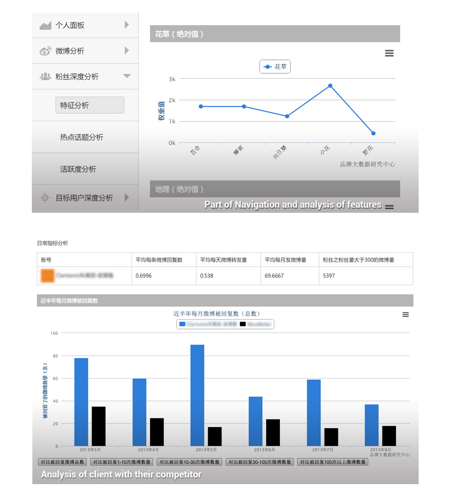

WordMemo
Oct 2013 - Dec 2013
WordMemo is the integrated project of seven assignments during seven weeks of the course Human-Computer Interaction at Coursera. Based on theoretical and empirical experiences from this course, I endeavoured to complete all the assignments and was proud of my perseverance since only 2.4% registered students finished all the assignments.
The first idea came from my real experience of memorizing English words. I tried several websites or software to help me memorize words, but I did not find the suitable one. My such need motivates me to design a website to help people efficiently memorize words. I came up with many functions of the website, but did not have enough time to implement all of them in this course. I will display a complete website to you in future. ^^
How WordMemo works:
- - Choose the word book you want to memorize
- - Enjoy your memorization
- - See your improvement in records
You can experience the prototype here: http://share.axure.com/NA4QXM/
Note: Since it’s just a prototype, it can’t do completely like a real website.
Heuristic Evaluation Stage
- - Prototypes were evaluated by peers
- - Observed the 10 design heuristics and rated the severity
Brand Big Data Research Center
Sept 2013 - Nov 2013
The big data era comes, followed by numerous applications applying the big data. Brand Big Data Research Center (品牌大数据研究中心) is just one of them. Now an increasing number of companies want to accurately pinpoint their potential users, so that the advertisement aiming at these users maximises the return. The project is to help clients analyse interests, job features, locations, etc. of their followers in Sina Weibo, find out their potential users, and finally visualize the valuable information to show to clients.
My contribution is to define the style of visualization, overall user interfaces of the website, and to discuss the functions according to needs from clients with a Product Manager.
How this website works:
A unique account with password is assigned to every our client, and they can log in to see relevant information.
They can see these visualized statistics:
- - Analysis of their basic information, including Weibo activities, followers, and following.
- - Analysis of Weibo of potential users and competitors.
- - Deep analysis of their potential users and followers, including analysis of features, hot topics and activity.
- - Analysis of their brands and recommendation for spokesperson.
- - Analysis of results of recommendation to potential users, including sending and visiting statistics.

Douban Book (Android)
Sept 2013 - Nov 2013
Douban.com is a Chinese SNS website allowing registered users to record information and create content related to film, books, music, and recent events and activities in Chinese cities [wiki]. Information of abundant books is available there. Many users search the book they like, and add them to their favorites. There is no lack of excellent notes or comments on books, and users love to read them. However, there’s no well-developed Android application focusing on similar functions of Douban in the market, so we decided to create an application to fill the vacancy on. Douban Book (Android) (赌书泼茶) was born then.
How this app works:
Non-log in:
- - Search books; read brief introductions and notes
Log-in with a Douban account:
- - Search books; read brief introductions and notes
- - View his/her own books in favorites or notes
- - Add books to their favorites
- - Edit or delete their own favorites or notes
- - Quickly search a book they need in their favorites
Eatornot
Dec 2012 - Apr 2013
People with different conditions need to plan their diet carefully; for example, diabatics patients should not eat food rich in sugur. Eatornot is an application to reminder what people should eat or should not eat. Now there are web and Andoird versions. We mainly aim at six different kinds of people, diabetic patients, hypertensive patients, high blood cholesterol patients, coronary artery disease patients, fatty liver disease patients, and pregnancy. Given a large number of people categorised in six groups mentioned, we choose to focus on them.
My contribution is to help analyze user needs and functions and design the UI (40+ PSDs).
You can view the website here: www.eatornot.cn